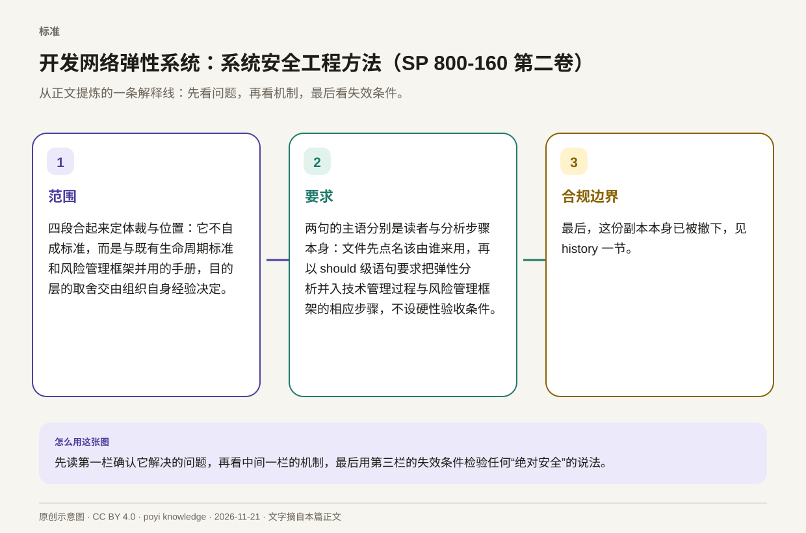
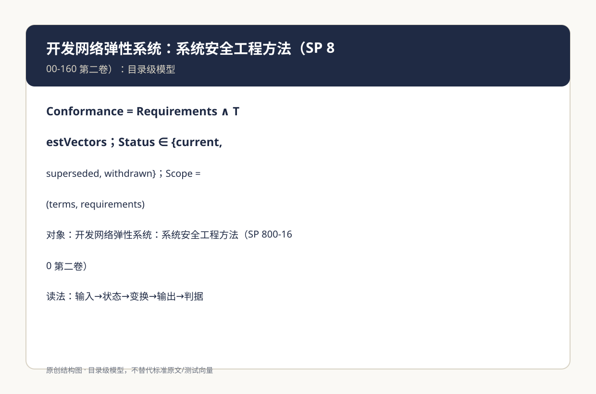

原理与机制
标准：开发网络弹性系统：系统安全工程方法（SP 800-160 第二卷）（Developing Cyber Resilient Systems: A Systems Security Engineering Approach (SP 800-160 Vol.摘要首句把它放进已有文件：「This publication is used in conjunction with ISO/IEC/IEEE 15288:2015」，并自陈体裁：「It can be viewed as a handbook for achieving the identified cyber resiliency outcomes based on a systems engineering perspective on system life cycle processes in conjunction with risk management processes, allowing the experience and expertise of the organization to help determine what is correct for its purpose.」§1.1 说明其补位性质：「The purpose of this document is to supplement [SP 800-160 v1] and [SP 800-37]」。关键词行以「risk management strategy; system life cycle; systems security engineering; trustworthiness.」收束主题。四段合起来定体裁与位置：它不自成标准，而是与既有生命周期标准和风险管理框架并用的手册，目的层的取舍交由组织自身经验决定。

为什么重要
风险前提写在卷首综述：「All discussions of cyber resiliency focus on assuring the mission or business functions and are predicated on the assumption that the adversary will breach defenses and establish a long-term presence in organizational systems.」要得到的能力定义为「the ability to anticipate, withstand, recover from, and adapt to adverse conditions, stresses, attacks, or compromises on systems that use or are enabled by cyber resources」。摘要据此说明组织须自行取舍：「Organizations can select, adapt, and use some or all of the cyber resiliency constructs」。前提与能力并列即是理由：若对手必然进入并长期驻留，只防一次突破并不足以保证任务，弹性构念正是为此列出，且须由组织自行取舍。
应用与实例
该条目用于应用安全工程中的对象定位与步骤复述；引用时先确认输入、参数与版本，再判断结论是否仍适用。

边界与攻击面
它自陈不提供步骤手册：卷首使用说明写「It is not intended to provide a specific recipe for execution.」并自比为手册：「it can be viewed as a catalog or handbook for achieving the identified cyber resiliency outcomes」。范围之外另有声明：「Second-order effects are beyond the scope of this publication.」强制力也有限：前言的法定职责段规定「Such information security standards and guidelines shall not apply to national security systems without the express approval of the appropriate federal officials exercising policy authority over such systems.」。最后，这份副本本身已被撤下，见 history 一节。
历史与背景
扉页三行给「NIST Special Publication 800-160」与「Developing Cyber Resilient Systems」，作者行为「RON ROSS VICTORIA PILLITTERI RICHARD GRAUBART DEBORAH BODEAU ROSALIE MCQUAID」；日期行 2019 年 11 月，引用行「Natl.Inst.Stand.Technol.Spec.Publ.800-160, Volume 2, 229 pages (November 2019)」，免费获取行后接 DOI 10.6028/NIST.SP.800-160v2。顶部废止横幅写「The attached publication has been withdrawn (archived), and is provided solely for historical purposes.」并记「SP 800-160 Vol.2 is superseded in its entirety by the publication of SP 800-160 Vol.2 Revision 1.」，取代件为 2021 年 12 月出版的 Vol.2 Revision 1，其 DOI 为 10.6028/NIST.SP.800-160v2r1。致谢页列出评审者，起首一句为「The authors gratefully acknowledge and appreciate the contributions from DJ Anand, Jon Boyens, Nicolas Chaillan, Ed Custeau, Holly Dunlap, Avi Gopstein, Suzanne Hassell, Bill Heinbockel, Daryl Hild, Scott Jackson, Lauren Knausenberger, Ellen Laderman」。扉页、引用行、DOI 与横幅合起来给出这份副本的时间线与地位：2019 年 11 月初版、2021 年 12 月 9 日撤下、由第二卷第 1 修订版整体取代，留存文本仅供历史查阅。
逐步示例与核验
形式模型与复算步骤
[S=\min_i S_i,\quad S_i\in{\text{密钥强度},\text{分组安全},\text{实现安全}}]
开发网络弹性系统：系统安全工程方法（SP 800-160 第二卷）的公开参数、密钥/随机数与消息；变量说明：S 为综合安全强度；各分量取最小值，不能只看密钥位数。1.读取标准规定的密钥/分组/模式参数。2.按标准表换算等效强度。3.取最弱分量作为系统强度。边界：公式只覆盖已登记的参数与假设；参数取值、标准版本和实现细节仍以来源为准。
参考出处
- Wikipedia search entry for 开发网络弹性系统：系统安全工程方法（SP 800-160 第二卷）. https://zh.wikipedia.org/w/index.php?search=%E5%BC%80%E5%8F%91%E7%BD%91%E7%BB%9C%E5%BC%B9%E6%80%A7%E7%B3%BB%E7%BB%9F%EF%BC%9A%E7%B3%BB%E7%BB%9F%E5%AE%89%E5%85%A8%E5%B7%A5%E7%A8%8B%E6%96%B9%E6%B3%95%EF%BC%88SP%20800-160%20%E7%AC%AC%E4%BA%8C%E5%8D%B7%EF%BC%89
- Handbook of Applied Cryptography (Menezes, van Oorschot, Vanstone). https://www.cacr.math.uwaterloo.ca/hac/